السلسلة 73
السيارة (صنف B) · 40 سؤال بالصوت. حاول تجاوب بوحدك، من بعد شوف الجواب.
السؤال 1
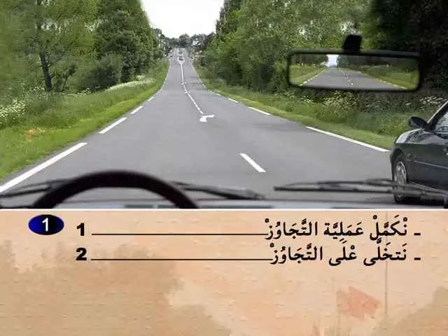
بيّن الجواب
الجواب الصحيح: 1
الخط المتقطّع كيعني يمكن نتجاوز، و بما أننا بدينا فعلا فعملية التجاوز يعني خاصني نكمل العملية، واخا بدات أسهم الانحياز لليمين كيبانوا.
السؤال 2
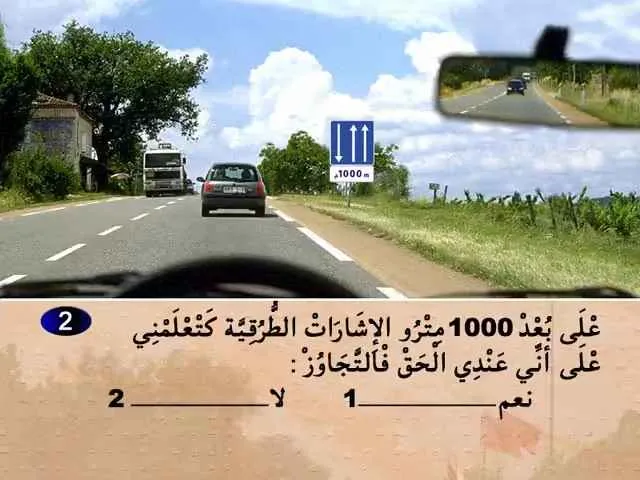
بيّن الجواب
الجواب الصحيح: 1
حنا دابا فطريق فيه جوج مسالك، و الإشارة الطرقية العمودية كتقول بعد 1000 متر غادي يولي يتزاد مسلك آخر فالجهة ديالي، يعني غادي نقدر نتجاوز.
السؤال 3
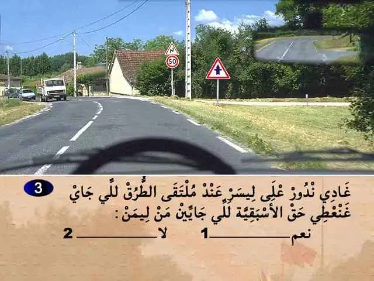
بيّن الجواب
الجواب الصحيح: 2
الإشارة الطرقية العمودية كتقول عندي حق الأسبقية فملتقى الطرق الجاي، ما غاديش نعطي الأسبقية لليمين ولا ليسار. الإجابة الصحيحة هي 2.
السؤال 4
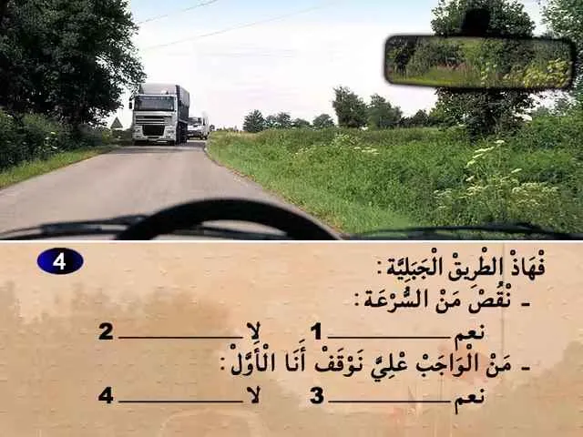
بيّن الجواب
الجواب الصحيح: 1 و 4
فالطرق الجبلية، العربات اللي غادية للتحت هي اللي خاصها توقف، و لازم نخفف السرعة باش يكون التقابل سهل. أنا ما غاديش نوقف الأول حيت عندي عقبة (طلعة)، الشاحنة هي اللي توقف و تعطيني الأسبقية.
السؤال 5
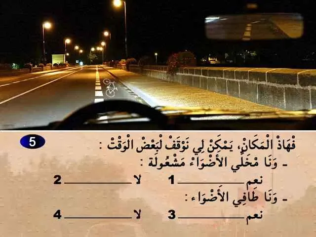
بيّن الجواب
الجواب الصحيح: 2 و 4
حنا دابا فمسلك خاص بالدراجات، ما خاصناش نوقفو ولا نتوقفو فهاد المكان.
السؤال 6
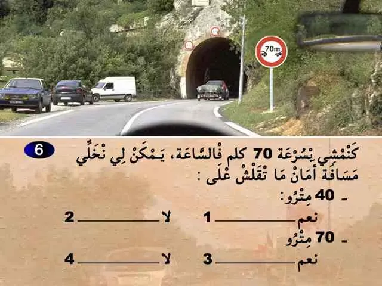
بيّن الجواب
الجواب الصحيح: 2 و 3
الإشارة ديال المنع كتقول خاصني نخلي مسافة أمان ديال 70 متر بيني و بين العربة اللي قدامي، مهما كانت السرعة.
السؤال 7
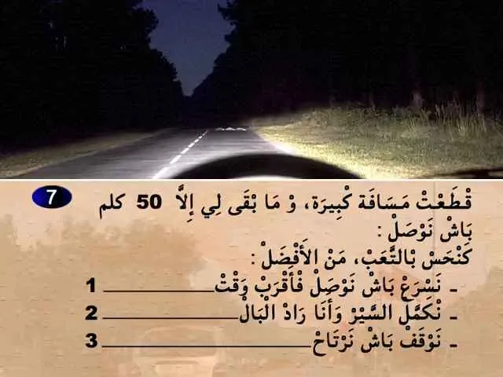
بيّن الجواب
الجواب الصحيح: 3
القانون كيقول بعد كل ساعتين ديال السياقة، خاصنا نوقفو 15 دقيقة، إذا كنت تعبان و غادي بسرعة غادي يكون خطر، إذن من الأفضل نوقف و نرتاح.
السؤال 8
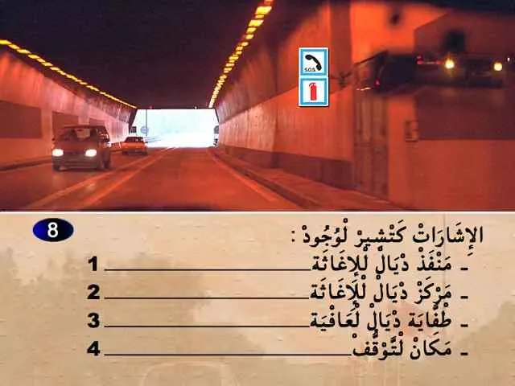
بيّن الجواب
الجواب الصحيح: 2 و 3
الإشارة الطرقية كتقول مركز إغاثة، و الإشارة الثانية كتقول مطفأة حريق.
السؤال 9
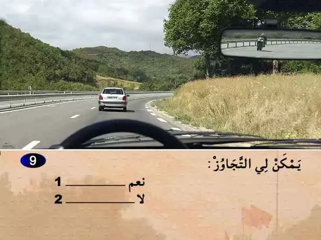
بيّن الجواب
الجواب الصحيح: 2
ما نقدرش نتجاوز دابا حيت كاينة دراجة نارية جاية من الخلف كتقوم بالتجاوز.
السؤال 10
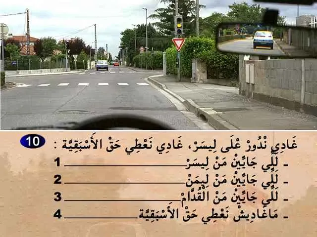
بيّن الجواب
الجواب الصحيح: 1 و 2 و 3
إذا كانت الإشارة الضوية برتقالية كترفرف، ندوز بحذر، و نعطي الأسبقية لليمين، اليسار، و بما انني غادي ندور على اليسار، خاص نعطي الاسبقية اللي جايين من الأمام ايضا.
السؤال 11
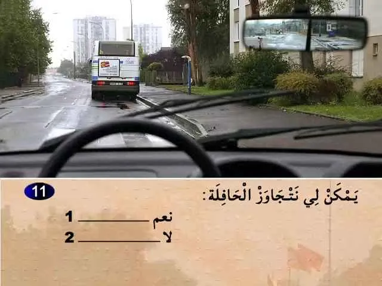
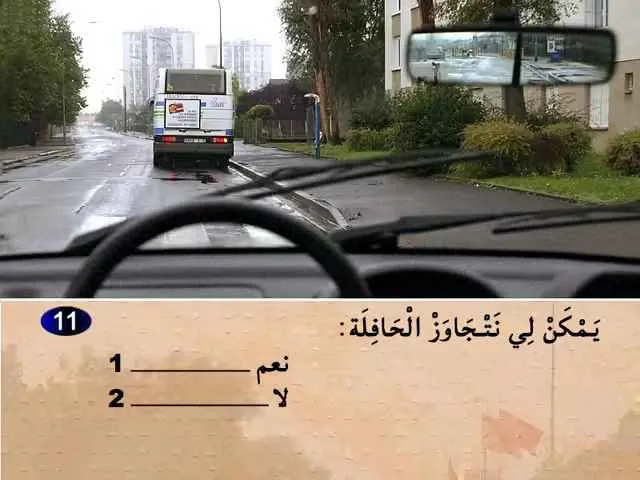
بيّن الجواب
الجواب الصحيح: 1
الحافلة واقفة، ما كايناش عربات جاية من الخلف ولا من الاتجاه المعاكس، يعني نقدر نتجاوزها.
السؤال 12
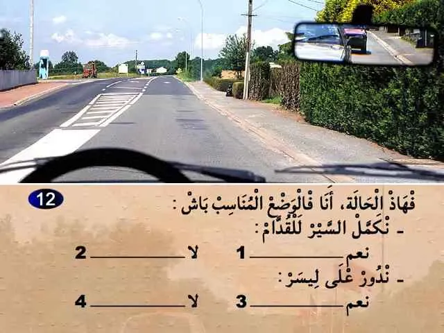
بيّن الجواب
الجواب الصحيح: 1 و 3
نقدر نكمل السير للقدام حيث ما كايناش إشارة كتمنعني، و نقدر ننعطف ليسار بعد ما ينتهي الخط الأبيض و المتقطع لي على اليسار ديالي.
السؤال 13
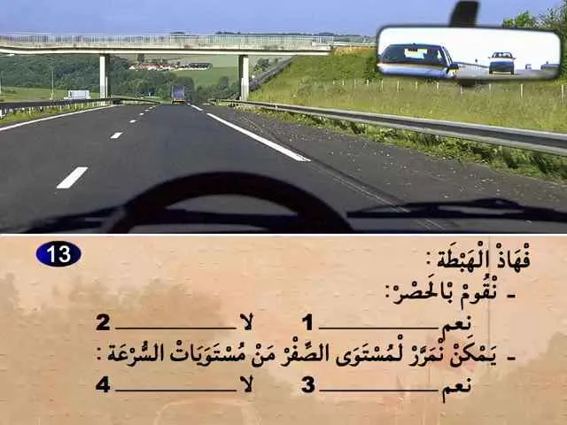
بيّن الجواب
الجواب الصحيح: 2 و 4
حنا فهبطة، ما نقدرش ندير الحصر حيت كاينين سيارات ورايا يقدروا يصطدموا بيا. و ما نقدرش نحط محول السرعة فالصفر حيت غادي نفقد السيطرة على السيارة.
السؤال 14
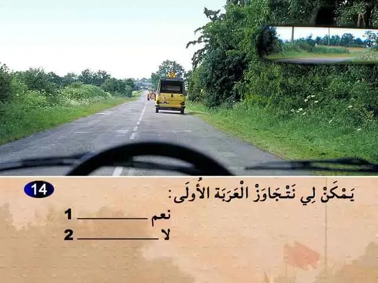
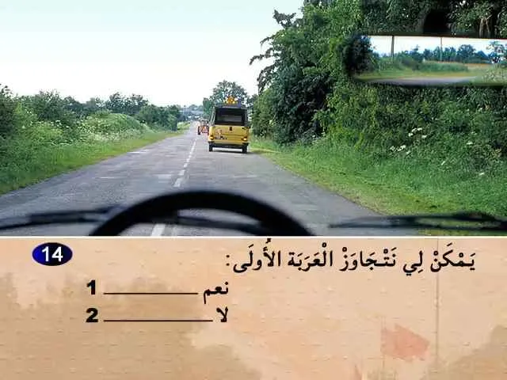
بيّن الجواب
الجواب الصحيح: 1
العربة اللي قدامي واقفة و الخط المتقطع كيسمح لي نتجاوز.
السؤال 15
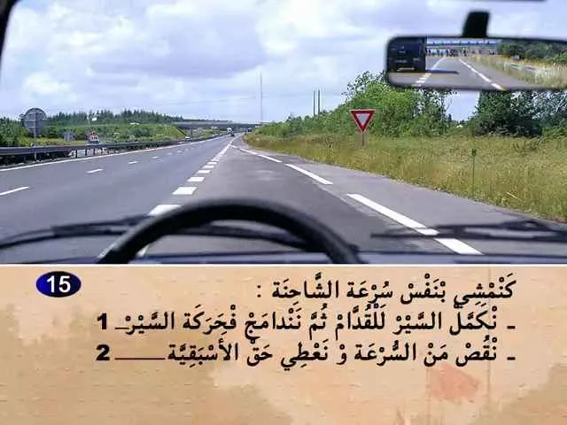
بيّن الجواب
الجواب الصحيح: 1
انا فمسلك الاندماج، الحافلة كتكون بطيئة مقارنة بالسيارة، نقدر نزيد فالسرعة و نندمج فحركة السير.
السؤال 16
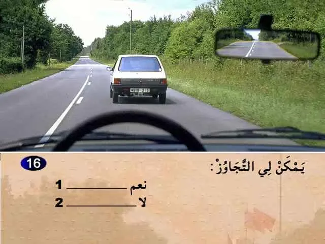
بيّن الجواب
الجواب الصحيح: 1
كاينين جوج خطوط، الخط اللي يهمنا هو ؛ي من جيهتنا، و للي هو خط متقطع، و الخط المتصل خاص بالعربات اللي جاية من الاتجاه المعاكس. في هاد الحالة نقدر نتجاوز.
السؤال 17
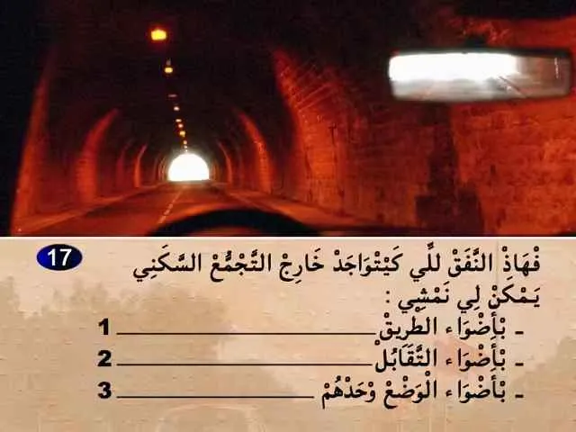
بيّن الجواب
الجواب الصحيح: 2
فالنفق، دايما نستعمل أضواء التقابل.
السؤال 18
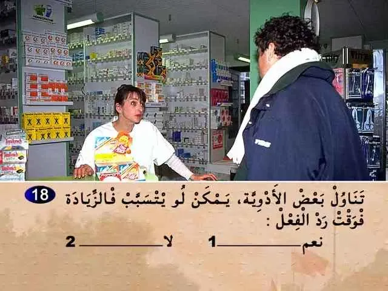
بيّن الجواب
الجواب الصحيح: 1
بعض الأدوية كتسبب النوم و العياء، و وقت رد الفعل كيولي أطول.
السؤال 19
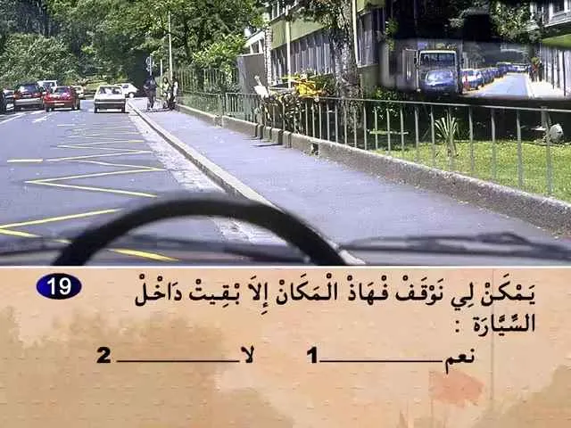
بيّن الجواب
الجواب الصحيح: 2
الخطوط الصفراء فالتشوير الطرقي كتدل على مكان خاص بالحافلات، و يمنع الوقوف و التوقف فيها.
السؤال 20
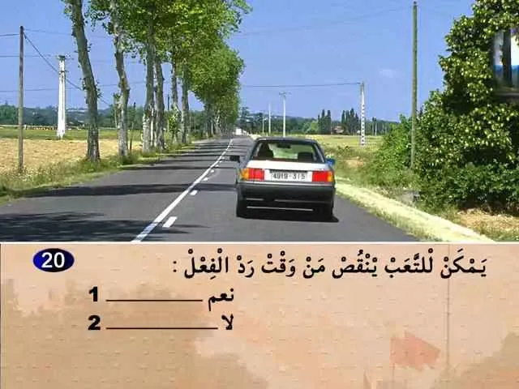
بيّن الجواب
الجواب الصحيح: 2
التعب كيخلي وقت رد الفعل أطول، يعني كنحتاج وقت أكثر باش ندير رد الفعل في حالة الخطر.
السؤال 21
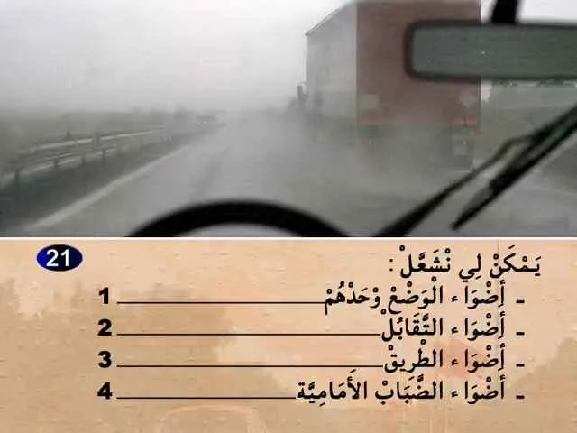
بيّن الجواب
الجواب الصحيح: 2 و 4
فالجو الممطر، نستعمل أضواء التقابل و أضواء الضباب الأمامية.
السؤال 22
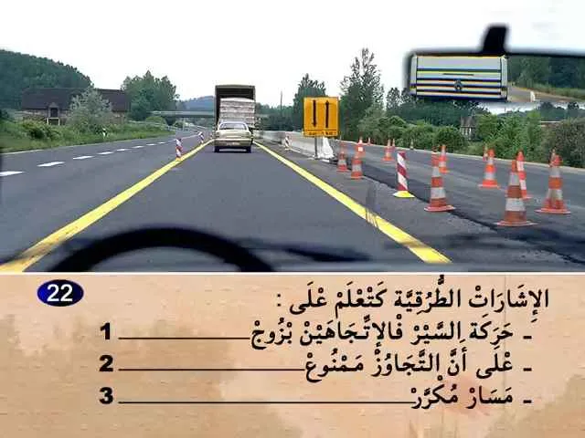
بيّن الجواب
الجواب الصحيح: 1 و 2
الإشارة الطرقية العمودية المؤقتة كتعلم على ان السير في الاتجاهين، و الخط المتصل كيمنع التجاوز.
السؤال 23
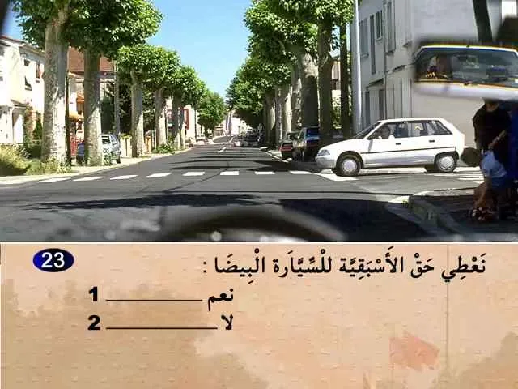
بيّن الجواب
الجواب الصحيح: 2
فملتقيات الطرق، الأسبقية دائما للعربات اللي جاية من الجهة اليمنى. ولكن السيارة اللي فاليمين عندها علامة قف، إذن ما نعطيهاش الأسبقية.
السؤال 24
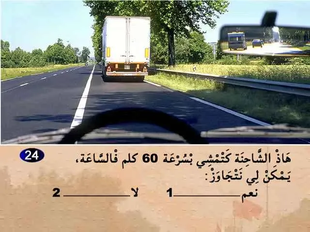
بيّن الجواب
الجواب الصحيح: 2
الخط المتصل كيمنعني من التجاوز.
السؤال 25
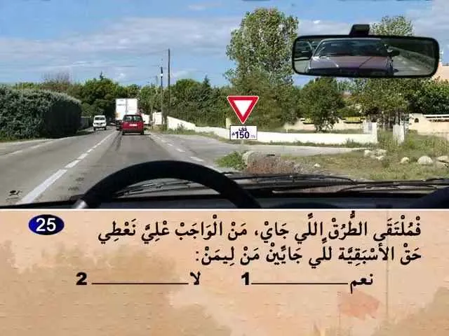
بيّن الجواب
الجواب الصحيح: 1
الإشارة الطرقية العمودية كتقول ما عنديش حق الأسبقية على بعد 150 متر، خاصني نعطي الأسبقية للعربات للي جاية من اليمين.
السؤال 26
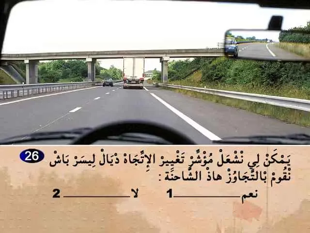
بيّن الجواب
الجواب الصحيح: 2
المرآة العاكسة كتبين سيارة كتجاوزني و قريبة، إذن ما نقدرش نتجاوز الشاحنة دابا.
السؤال 27
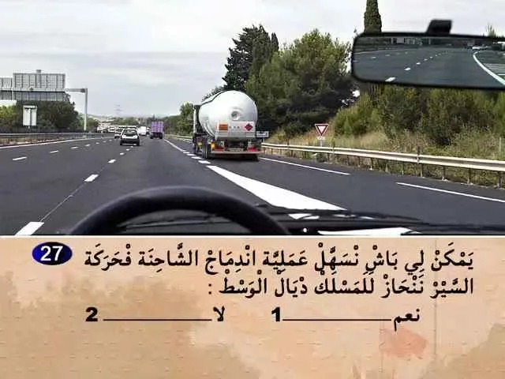
بيّن الجواب
الجواب الصحيح: 1
المسلك الوسطي فارغ، يمكنني نتحرك لوسط باش نسهل الاندماج للشاحنة.
السؤال 28
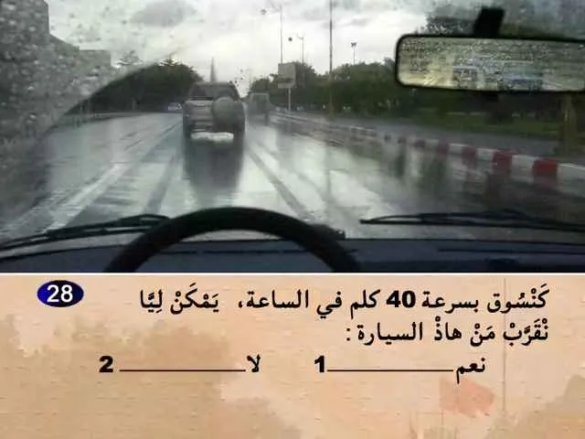
بيّن الجواب
الجواب الصحيح: 2
فالجو الممطر، خاصنا نزيدوا مسافة الأمان، و نبعدوا على السيارة اللي قدامنا.
السؤال 29
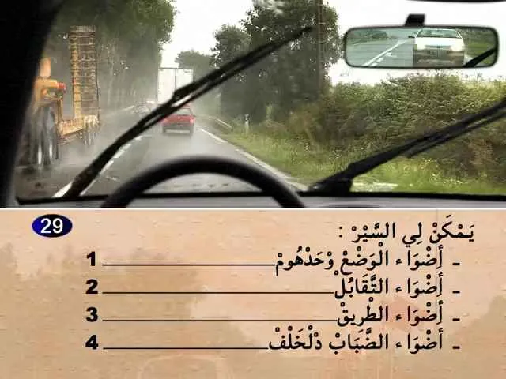
بيّن الجواب
الجواب الصحيح: 2
الجو ممطر، نستعمل أضواء التقابل. فالإختيارات ما كايناش أضواء الضباب الأمامية، إذن نختار غير أضواء التقابل.
السؤال 30
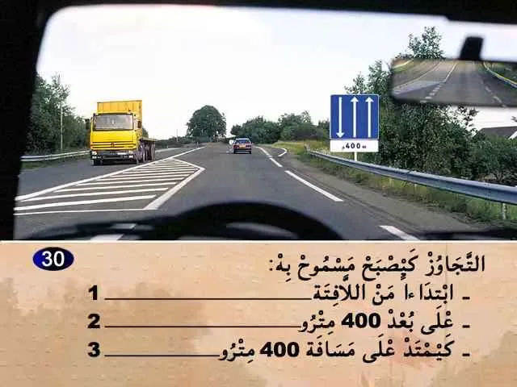
بيّن الجواب
الجواب الصحيح: 2
بعد 400 متر غادي يكون مسلك آخر، دابا ما نقدرش نتجاوز حيت الخط المتصل كيمنعنا، بعد 400 متر يمكننا التجاوز.
السؤال 31
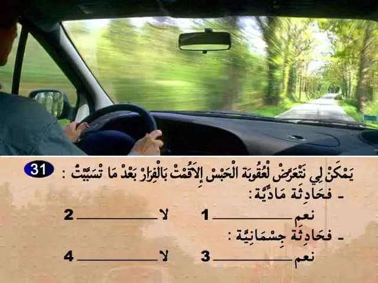
بيّن الجواب
الجواب الصحيح: 1 و 3
الهرب بعد التسبب في حادثة سير يعرضني لعقوبة السجن، سواء كانت الخسائر مادية أو جسمانية.
السؤال 32
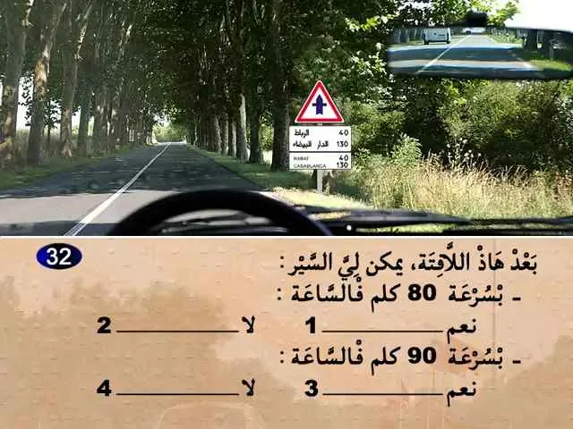
بيّن الجواب
الجواب الصحيح: 1 و 3
في الطريق الوطنية، السرعة القصوى هي 100 كلم في الساعة، ويمكنني السير ب 80 أو 90 كلم في الساعة.
السؤال 33
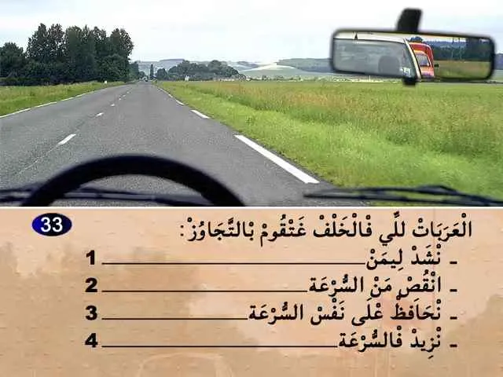
بيّن الجواب
الجواب الصحيح: 1 و 3
إذا كانت السيارات كتجاوزني، خاصني نبقى فاليمين و نحافظ على نفس السرعة. الإجابة الصحيحة هي 1 و 3.
السؤال 34
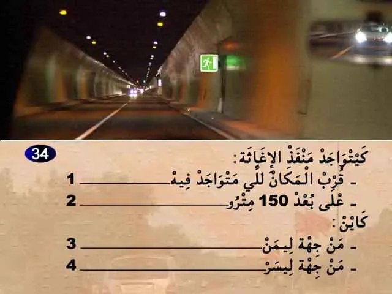
بيّن الجواب
الجواب الصحيح: 1 و 3
علامة منفذ الإغاثة كتدل على مكان المنفذ فالجهة اليمنى.
السؤال 35
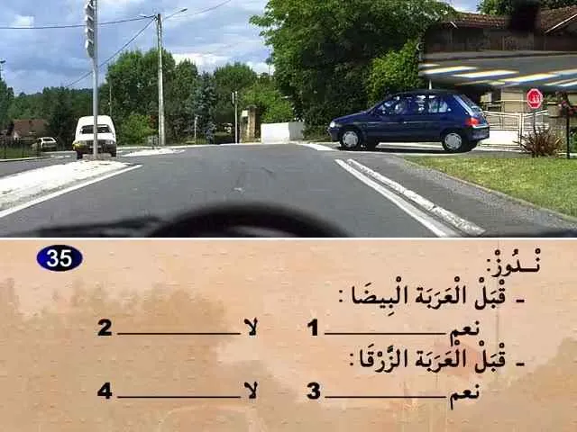
بيّن الجواب
الجواب الصحيح: 1 و 3
فملتقى الطرق، الأسبقية لي، حيت السيارة الزرقاء عندها علامة قف، و السيارة البيضاء على يساري، إذن نمر أنا الأول.
السؤال 36
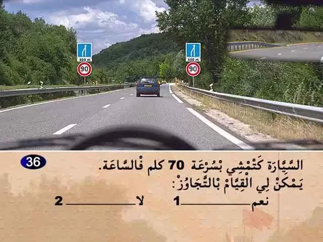
بيّن الجواب
الجواب الصحيح: 1
السيارة كتسير بسرعة 70 كلم في الساعة، و السرعة القصوى 90 كلم في الساعة، نقدر نتجاوز حيث المسلك غادي ينقص بعد 400 متر لي هي مسافة كافية باش نتجاوز.
السؤال 37
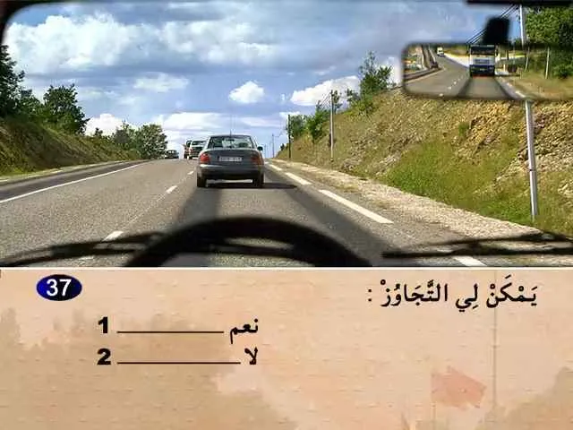
بيّن الجواب
الجواب الصحيح: 1
الطريق ذات اتجاه واحد و الخط المتقطع كيسمح لي بالتجاوز، إذن نقدر نتجاوز.
السؤال 38
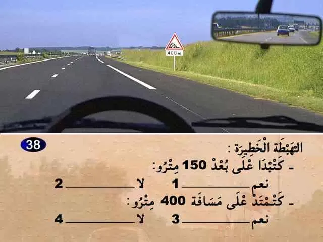
بيّن الجواب
الجواب الصحيح: 2 و 4
الإشارة الطرقية العمودية كتعلم على خطر الانحدار، وكاينة علامة تكميلية كتقول ان الخطر كيتواجد بعد 400 متر.
السؤال 39
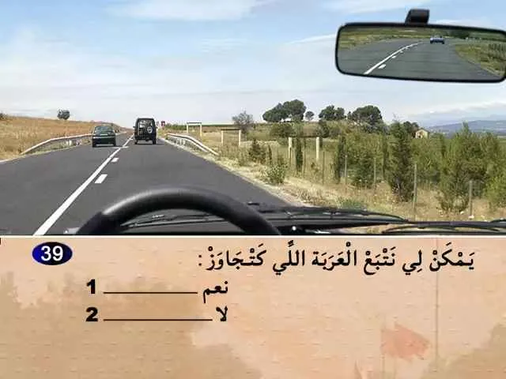
بيّن الجواب
الجواب الصحيح: 2
فالطريق ذات الاتجاهين، ما نقدرش نتبع سيارة كتجاوز.
السؤال 40
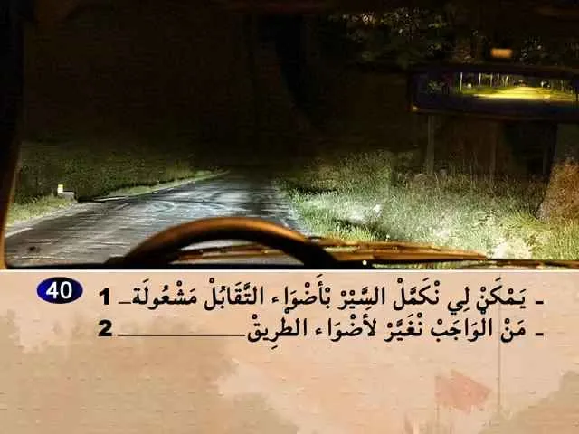
بيّن الجواب
الجواب الصحيح: 2
الطريق مامضوياش و مظلمة جدا، خاصني نستعمل أضواء الطريق.